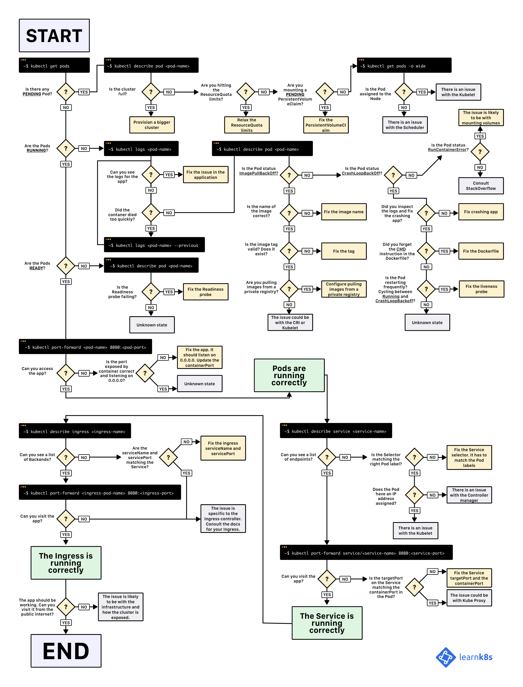

Pod 排错
本章介绍 Pod 运行异常的排错方法。
一般来说，无论 Pod 处于什么异常状态，都可以执行以下命令来查看 Pod 的状态
kubectl get pod <pod-name> -o yaml查看 Pod 的配置是否正确kubectl describe pod <pod-name>查看 Pod 的事件kubectl logs <pod-name> [-c <container-name>]查看容器日志
这些事件和日志通常都会有助于排查 Pod 发生的问题。
Pod 一直处于 Pending 状态
Pending 说明 Pod 还没有调度到某个 Node 上面。可以通过 kubectl describe pod <pod-name> 命令查看到当前 Pod 的事件，进而判断为什么没有调度。如
$ kubectl describe pod mypod
...
Events:
Type Reason Age From Message
---- ------ ---- ---- -------
Warning FailedScheduling 12s (x6 over 27s) default-scheduler 0/4 nodes are available: 2 Insufficient cpu.
可能的原因包括
- 资源不足，集群内所有的 Node 都不满足该 Pod 请求的 CPU、内存、GPU 或者临时存储空间等资源。解决方法是删除集群内不用的 Pod 或者增加新的 Node。
- HostPort 端口已被占用，通常推荐使用 Service 对外开放服务端口
Pod 一直处于 Waiting 或 ContainerCreating 状态
首先还是通过 kubectl describe pod <pod-name> 命令查看到当前 Pod 的事件
$ kubectl -n kube-system describe pod nginx-pod
Events:
Type Reason Age From Message
---- ------ ---- ---- -------
Normal Scheduled 1m default-scheduler Successfully assigned nginx-pod to node1
Normal SuccessfulMountVolume 1m kubelet, gpu13 MountVolume.SetUp succeeded for volume "config-volume"
Normal SuccessfulMountVolume 1m kubelet, gpu13 MountVolume.SetUp succeeded for volume "coredns-token-sxdmc"
Warning FailedSync 2s (x4 over 46s) kubelet, gpu13 Error syncing pod
Normal SandboxChanged 1s (x4 over 46s) kubelet, gpu13 Pod sandbox changed, it will be killed and re-created.
可以发现，该 Pod 的 Sandbox 容器无法正常启动，具体原因需要查看 Kubelet 日志：
$ journalctl -u kubelet
...
Mar 14 04:22:04 node1 kubelet[29801]: E0314 04:22:04.649912 29801 cni.go:294] Error adding network: failed to set bridge addr: "cni0" already has an IP address different from 10.244.4.1/24
Mar 14 04:22:04 node1 kubelet[29801]: E0314 04:22:04.649941 29801 cni.go:243] Error while adding to cni network: failed to set bridge addr: "cni0" already has an IP address different from 10.244.4.1/24
Mar 14 04:22:04 node1 kubelet[29801]: W0314 04:22:04.891337 29801 cni.go:258] CNI failed to retrieve network namespace path: Cannot find network namespace for the terminated container "c4fd616cde0e7052c240173541b8543f746e75c17744872aa04fe06f52b5141c"
Mar 14 04:22:05 node1 kubelet[29801]: E0314 04:22:05.965801 29801 remote_runtime.go:91] RunPodSandbox from runtime service failed: rpc error: code = 2 desc = NetworkPlugin cni failed to set up pod "nginx-pod" network: failed to set bridge addr: "cni0" already has an IP address different from 10.244.4.1/24
发现是 cni0 网桥配置了一个不同网段的 IP 地址导致，删除该网桥（网络插件会自动重新创建）即可修复
$ ip link set cni0 down
$ brctl delbr cni0
除了以上错误，其他可能的原因还有
- 镜像拉取失败，比如
- 配置了错误的镜像
- Kubelet 无法访问镜像（国内环境访问
gcr.io需要特殊处理） - 私有镜像的密钥配置错误
- 镜像太大，拉取超时（可以适当调整 kubelet 的
--image-pull-progress-deadline和--runtime-request-timeout选项）
- CNI 网络错误，一般需要检查 CNI 网络插件的配置，比如
- 无法配置 Pod 网络
- 无法分配 IP 地址
- 容器无法启动，需要检查是否打包了正确的镜像或者是否配置了正确的容器参数
Pod 处于 ImagePullBackOff 状态
这通常是镜像名称配置错误或者私有镜像的密钥配置错误导致。这种情况可以使用 docker pull <image> 来验证镜像是否可以正常拉取。
$ kubectl describe pod mypod
...
Events:
Type Reason Age From Message
---- ------ ---- ---- -------
Normal Scheduled 36s default-scheduler Successfully assigned sh to k8s-agentpool1-38622806-0
Normal SuccessfulMountVolume 35s kubelet, k8s-agentpool1-38622806-0 MountVolume.SetUp succeeded for volume "default-token-n4pn6"
Normal Pulling 17s (x2 over 33s) kubelet, k8s-agentpool1-38622806-0 pulling image "a1pine"
Warning Failed 14s (x2 over 29s) kubelet, k8s-agentpool1-38622806-0 Failed to pull image "a1pine": rpc error: code = Unknown desc = Error response from daemon: repository a1pine not found: does not exist or no pull access
Warning Failed 14s (x2 over 29s) kubelet, k8s-agentpool1-38622806-0 Error: ErrImagePull
Normal SandboxChanged 4s (x7 over 28s) kubelet, k8s-agentpool1-38622806-0 Pod sandbox changed, it will be killed and re-created.
Normal BackOff 4s (x5 over 25s) kubelet, k8s-agentpool1-38622806-0 Back-off pulling image "a1pine"
Warning Failed 1s (x6 over 25s) kubelet, k8s-agentpool1-38622806-0 Error: ImagePullBackOff
如果是私有镜像，需要首先创建一个 docker-registry 类型的 Secret
kubectl create secret docker-registry my-secret --docker-server=DOCKER_REGISTRY_SERVER --docker-username=DOCKER_USER --docker-password=DOCKER_PASSWORD --docker-email=DOCKER_EMAIL
然后在容器中引用这个 Secret
spec:
containers:
- name: private-reg-container
image: <your-private-image>
imagePullSecrets:
- name: my-secret
Pod 一直处于 CrashLoopBackOff 状态
CrashLoopBackOff 状态说明容器曾经启动了，但又异常退出了。此时 Pod 的 RestartCounts 通常是大于 0 的，可以先查看一下容器的日志
kubectl describe pod <pod-name>
kubectl logs <pod-name>
kubectl logs --previous <pod-name>
这里可以发现一些容器退出的原因，比如
- 容器进程退出
- 健康检查失败退出
- OOMKilled
$ kubectl describe pod mypod
...
Containers:
sh:
Container ID: docker://3f7a2ee0e7e0e16c22090a25f9b6e42b5c06ec049405bc34d3aa183060eb4906
Image: alpine
Image ID: docker-pullable://alpine@sha256:7b848083f93822dd21b0a2f14a110bd99f6efb4b838d499df6d04a49d0debf8b
Port: <none>
Host Port: <none>
State: Terminated
Reason: OOMKilled
Exit Code: 2
Last State: Terminated
Reason: OOMKilled
Exit Code: 2
Ready: False
Restart Count: 3
Limits:
cpu: 1
memory: 1G
Requests:
cpu: 100m
memory: 500M
...
如果此时如果还未发现线索，还可以到容器内执行命令来进一步查看退出原因
kubectl exec cassandra -- cat /var/log/cassandra/system.log
如果还是没有线索，那就需要 SSH 登录该 Pod 所在的 Node 上，查看 Kubelet 或者 Docker 的日志进一步排查了
# Query Node
kubectl get pod <pod-name> -o wide
# SSH to Node
ssh <username>@<node-name>
Pod 处于 Error 状态
通常处于 Error 状态说明 Pod 启动过程中发生了错误。常见的原因包括
- 依赖的 ConfigMap、Secret 或者 PV 等不存在
- 请求的资源超过了管理员设置的限制，比如超过了 LimitRange 等
- 违反集群的安全策略，比如违反了 PodSecurityPolicy 等
- 容器无权操作集群内的资源，比如开启 RBAC 后，需要为 ServiceAccount 配置角色绑定
Pod 处于 Terminating 或 Unknown 状态
从 v1.5 开始，Kubernetes 不会因为 Node 失联而删除其上正在运行的 Pod，而是将其标记为 Terminating 或 Unknown 状态。想要删除这些状态的 Pod 有三种方法：
- 从集群中删除该 Node。使用公有云时，kube-controller-manager 会在 VM 删除后自动删除对应的 Node。而在物理机部署的集群中，需要管理员手动删除 Node（如
kubectl delete node <node-name>。 - Node 恢复正常。Kubelet 会重新跟 kube-apiserver 通信确认这些 Pod 的期待状态，进而再决定删除或者继续运行这些 Pod。
- 用户强制删除。用户可以执行
kubectl delete pods <pod> --grace-period=0 --force强制删除 Pod。除非明确知道 Pod 的确处于停止状态（比如 Node 所在 VM 或物理机已经关机），否则不建议使用该方法。特别是 StatefulSet 管理的 Pod，强制删除容易导致脑裂或者数据丢失等问题。
如果 Kubelet 是以 Docker 容器的形式运行的，此时 kubelet 日志中可能会发现如下的错误：
{"log":"I0926 19:59:07.162477 54420 kubelet.go:1894] SyncLoop (DELETE, \"api\"): \"billcenter-737844550-26z3w_meipu(30f3ffec-a29f-11e7-b693-246e9607517c)\"\n","stream":"stderr","time":"2017-09-26T11:59:07.162748656Z"}
{"log":"I0926 19:59:39.977126 54420 reconciler.go:186] operationExecutor.UnmountVolume started for volume \"default-token-6tpnm\" (UniqueName: \"kubernetes.io/secret/30f3ffec-a29f-11e7-b693-246e9607517c-default-token-6tpnm\") pod \"30f3ffec-a29f-11e7-b693-246e9607517c\" (UID: \"30f3ffec-a29f-11e7-b693-246e9607517c\") \n","stream":"stderr","time":"2017-09-26T11:59:39.977438174Z"}
{"log":"E0926 19:59:39.977461 54420 nestedpendingoperations.go:262] Operation for \"\\\"kubernetes.io/secret/30f3ffec-a29f-11e7-b693-246e9607517c-default-token-6tpnm\\\" (\\\"30f3ffec-a29f-11e7-b693-246e9607517c\\\")\" failed. No retries permitted until 2017-09-26 19:59:41.977419403 +0800 CST (durationBeforeRetry 2s). Error: UnmountVolume.TearDown failed for volume \"default-token-6tpnm\" (UniqueName: \"kubernetes.io/secret/30f3ffec-a29f-11e7-b693-246e9607517c-default-token-6tpnm\") pod \"30f3ffec-a29f-11e7-b693-246e9607517c\" (UID: \"30f3ffec-a29f-11e7-b693-246e9607517c\") : remove /var/lib/kubelet/pods/30f3ffec-a29f-11e7-b693-246e9607517c/volumes/kubernetes.io~secret/default-token-6tpnm: device or resource busy\n","stream":"stderr","time":"2017-09-26T11:59:39.977728079Z"}
如果是这种情况，则需要给 kubelet 容器设置 --containerized 参数并传入以下的存储卷
# 以使用 calico 网络插件为例
-v /:/rootfs:ro,shared \
-v /sys:/sys:ro \
-v /dev:/dev:rw \
-v /var/log:/var/log:rw \
-v /run/calico/:/run/calico/:rw \
-v /run/docker/:/run/docker/:rw \
-v /run/docker.sock:/run/docker.sock:rw \
-v /usr/lib/os-release:/etc/os-release \
-v /usr/share/ca-certificates/:/etc/ssl/certs \
-v /var/lib/docker/:/var/lib/docker:rw,shared \
-v /var/lib/kubelet/:/var/lib/kubelet:rw,shared \
-v /etc/kubernetes/ssl/:/etc/kubernetes/ssl/ \
-v /etc/kubernetes/config/:/etc/kubernetes/config/ \
-v /etc/cni/net.d/:/etc/cni/net.d/ \
-v /opt/cni/bin/:/opt/cni/bin/ \
处于 Terminating 状态的 Pod 在 Kubelet 恢复正常运行后一般会自动删除。但有时也会出现无法删除的情况，并且通过 kubectl delete pods <pod> --grace-period=0 --force 也无法强制删除。此时一般是由于 finalizers 导致的，通过 kubectl edit 将 finalizers 删除即可解决。
"finalizers": [
"foregroundDeletion"
]
Pod 行为异常
这里所说的行为异常是指 Pod 没有按预期的行为执行，比如没有运行 podSpec 里面设置的命令行参数。这一般是 podSpec yaml 文件内容有误，可以尝试使用 --validate 参数重建容器，比如
kubectl delete pod mypod
kubectl create --validate -f mypod.yaml
也可以查看创建后的 podSpec 是否是对的，比如
kubectl get pod mypod -o yaml
修改静态 Pod 的 Manifest 后未自动重建
Kubelet 使用 inotify 机制检测 /etc/kubernetes/manifests 目录（可通过 Kubelet 的 --pod-manifest-path 选项指定）中静态 Pod 的变化，并在文件发生变化后重新创建相应的 Pod。但有时也会发生修改静态 Pod 的 Manifest 后未自动创建新 Pod 的情景，此时一个简单的修复方法是重启 Kubelet。
Nginx 启动失败
Nginx 启动失败，错误消息是 nginx: [emerg] socket() [::]:8000 failed (97: Address family not supported by protocol)。这是由于服务器未开启 IPv6 导致的，解决方法有两种：
- 第一种方法，服务器开启 IPv6；
- 或者，第二种方法，删除或者注释掉
/etc/nginx/conf.d/default.conf文件中的listen [::]:80 default_server;。
Namespace 一直处于 terminating 状态
Namespace 一直处于 terminating 状态，一般有两种原因：
- Namespace 中还有资源正在删除中
- Namespace 的 Finalizer 未正常清理
对第一个问题，可以执行下面的命令来查询所有的资源
kubectl api-resources --verbs=list --namespaced -o name | xargs -n 1 kubectl get --show-kind --ignore-not-found -n $NAMESPACE
而第二个问题则需要手动清理 Namespace 的 Finalizer 列表：
1) 使用 kubectl proxy：
kubectl proxy &
NAMESPACE="<ns-to-delete>"
kubectl get namespaces $NAMESPACE -o json | jq '.metadata.finalizers=[]' | jq '.spec.finalizers=[]' > /tmp/ns.json
curl -k -H "Content-Type: application/json" -X PUT --data-binary @/tmp/ns.json http://127.0.0.1:8001/api/v1/namespaces/$NAMESPACE/finalize
2) 使用 kubectl --raw：
NAMESPACE="<ns-to-delete>"
kubectl get namespaces $NAMESPACE -o json | jq '.metadata.finalizers=[]' | jq '.spec.finalizers=[]' | kubectl replace --raw /api/v1/namespaces/$NAMESPACE/finalize -f -
Pod 排错图解

(图片来自A visual guide on troubleshooting Kubernetes deployments）